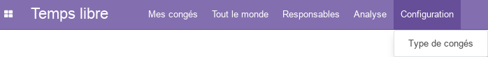
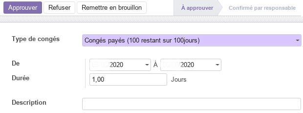

Module Temps Libre
Ce document illustre les différentes fonctionnalités du module Temps Libre d’odoo 13 community.
Présentation du module
Ce module complémentaire au module Employés est destiné à gérer les vacances et les absences des employés. Il permet :
de dispoer d’une vue d’ensemble sur les congés de tous les employés et les jours de vacances pris.
aux employés de créer des demandes et aux managers de les approuvées en quelques clics tout en mettant à jour l’agenda de chaque employé.
aux managers de garder une vue globale des congés de leur équipes afin que celle-ci reste organisée et de pour prévoir facilement la répartition des tâches en l’absence de certains membres.
de recevez des rapports afin de planifier à l’avance.
de disposer d’un outil de reporting simple afin de créer des rapports en un seul clic pour chaque demande de congé, détaillés par type de demande, employé, département et même pour l’ensemble de l’entreprise.
d’obtenir des statistiques sur les congés et de planifier au long terme afin d’assurer le maintien de la productivité à son plus haut niveau.

Configuration (admin)
Cette section, réservée aux administrateurs, permet de définir les paramètres généraux du module.
Types de congés
Cette section permet aux GRH de gérer les types de congés autorisés par l’entreprise. Ainsi, les GRH on la possibilité de renseigner toutes les informations utiles des congés légaux et spécifiques ouverts aux employés, tel que : la durrée, le mode d’attribution, les autorités de validation et la validité.

Aussi, à partir de cette vue, les GRH disposent d’une synthèse simplifiée pour chaque type de congés avec Group Days et Congés de groupe.
Mes congés
Employé Responsable hiérarchique Gestionnaires RH
Tableau de bord
Cette section donne accès à une vue en calendrier ou en liste à l’ensemble des congés de l’utilsateur en cours. La vue en calendrier peut être paramétrée pour afficher les congés par jour, semaine ou mois.
En utlisant la commande Nouvelle demande de congés ou en sélectionnant directement les journées qui’il veut prendre sur le calendrier, l’employé peut créer une nouvelle demande de congés et renseigner les informations y afférentes.
Aussi, la commande Nouvelle demande d’allocation permet à l’employé de créer une nouvelle demande d’attribution et renseigner les informations y afférentes.
Demandes de congés
Cette section permet aux employés de demander des congés pour les types dont le mode d’attribution est soit Pas d’allocation nécessaire ou Alloué par les RH uniquement.
Dans la demnade, l’employé renseigne toutes les informations utiles, tel que : le type de congés, la période et la description. Cette demande de congés progresse selon un processus en deux (02) étapes, à savoir : à approuver et Confirmé par responsable.

Une fois la demnade créee, et selon le mode de validation du type de congés demandé, le Responsbale hiérarchique de l’employé peut Approuver ou Refuser la demande en utlisant les commandes y afférentes.
Par la suite, le GRH doit Valider la demande, si son type le nécessite.
Demandes d’attribution
Cette section permet aux employés de demander des attributions de temps libre pour les types dont le mode d’attribution est Free Allocation request (demande d’allocation libre) ou dont le nombre de jours a déjà été alloués par le GRH. Ainsi, l’employé renseigne les informations suivantes : description, type de congés, durée et commentaire.

Cette demande d’attribution progresse selon le processus suivant : à soumettre, à approuver et Confirmé par responsable. Pour ce faire, le Responsable hiérarchique et le GRH doivent valider cette demande pour que l’employé puisse faire des demandes de congés dans la limite des journées allouées.
Tout le monde
Cette section donne accès à une vue en calendrier ou en liste à l’ensemble des congés des employés de l’entreprise. La vue en calendrier peut être paramétrée pour afficher les congés par jour, semaine ou mois.
Responsables
Cette section est déstinée aux Responsables hiérarchiques d’accéder directement aux enregistrements de temps libres et d’attribution à approuvés, à liste de Tous les temps libres et attributions, ainsi qu’aux Temps libres reportés sur la paie. La liste de Tous les employés et les Temps libres reportés sur la paie ne sont accessibles qu’aux GRH.
La liste des demandes de temps libre (congés, attributions) à approuver affiche la liste des employés dont le paramètre Gestionnaire (fiche de l’employé) est définis sur l’utilisateur en cours.
Pour les demandes d’attribution, le GRH dispose de plusieurs modes d’allocation, soit Par employé, Par société, Par Département ou Par catégorie d’employé. Il peut soit Approuver refuser Refuser la demande en utlisant les commandes y afférentes.

Analyse
La partie analyse permet aux GRH de visualiser des vues synthétiques sous différentes formes (listes, tableau croisé ou graphes) de la situation des congés des employés, soit par employé soit par type.
Workflow

Plus de détails
Pour la collaboration sur les formulaires de ce module, consulter la fonctionnalité conversations.